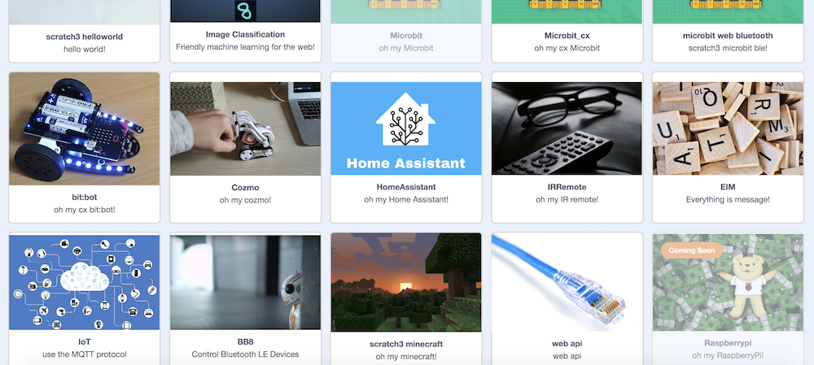

Welcome to scratch3_adapter
scratch3_adapter是Scratch3 Lab的一个子项目
Scratch3 Lab是一个致力于将Scratch3.0接入开源硬件及AI的实验项目(Scratch3 Lab: connect Scratch3.0 to open-source hardware and AI)
使用scratch3_adapter，你可以轻松将任何有趣的东西接入Scratch3.0(只需几行代码)，接入之后你便能用Scratch3.0的积木来操控它，让它与任何接入Scratch3.0的物体互动。无论是来自现实世界的物体，还是来自虚拟世界的AI或动画角色，都能彼此互动，我们不想针对某个硬件产品发布一个客户端，我们相信创意来自广泛的连接，我们致力于做一个中立的东西，将Scratch3.0连接到更广阔的领域，我们想做到宽围墙
硬件方面,我们已经接入了:
AI方面，我们接入了:
scratch3_adapter采用插件式的设计，允许你自己动手写插件来拓展它，开发手册将教会大家如何通过短短几行代码来自定义插件。
如果你有什么心仪的玩具，我们没有考虑到的，你可以使用scratch3_adapter将它接入Scratch3 Lab，我们也鼓励你与大家分享其中的乐趣 :)，如果你有什么令人振奋的点子或者遇到什么困难，欢迎联系我们
我最近正在把童年玩的的四驱车接入其中 :)
我们正为Scratch3 Lab构建社区，大家有什么有趣的动手经历或想法，欢迎分享到社区，在这儿寻找志同道合的小伙伴。一起折腾些好玩的东西，毕竟人生苦短
如果你想走得快，一个人走; 如果你想走得远，一群人走
目前已支持的插件
这是Scratch3 Lab目前支持的部分插件截图 